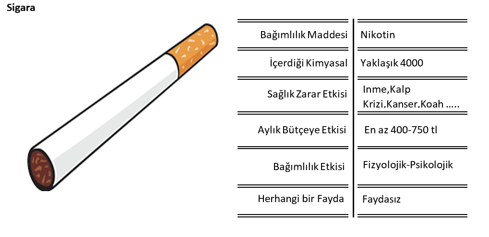
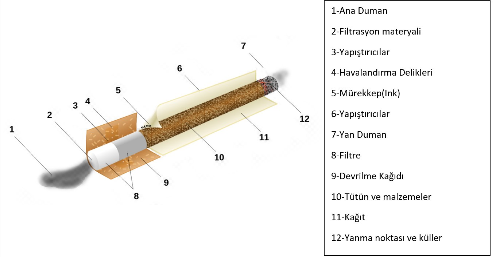
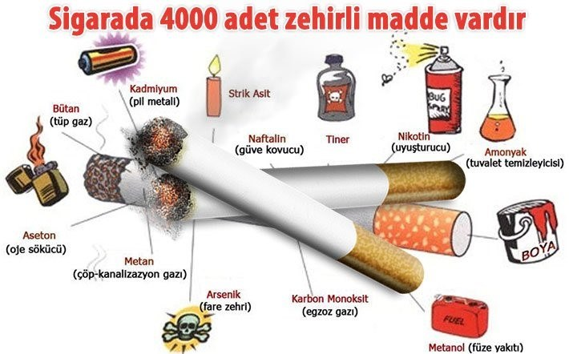
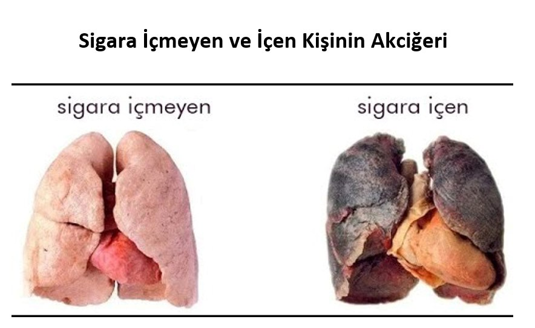
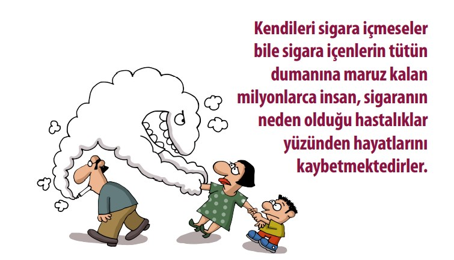
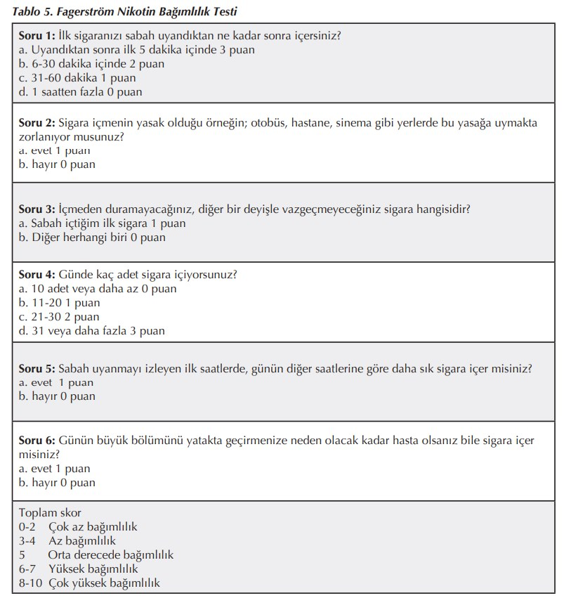
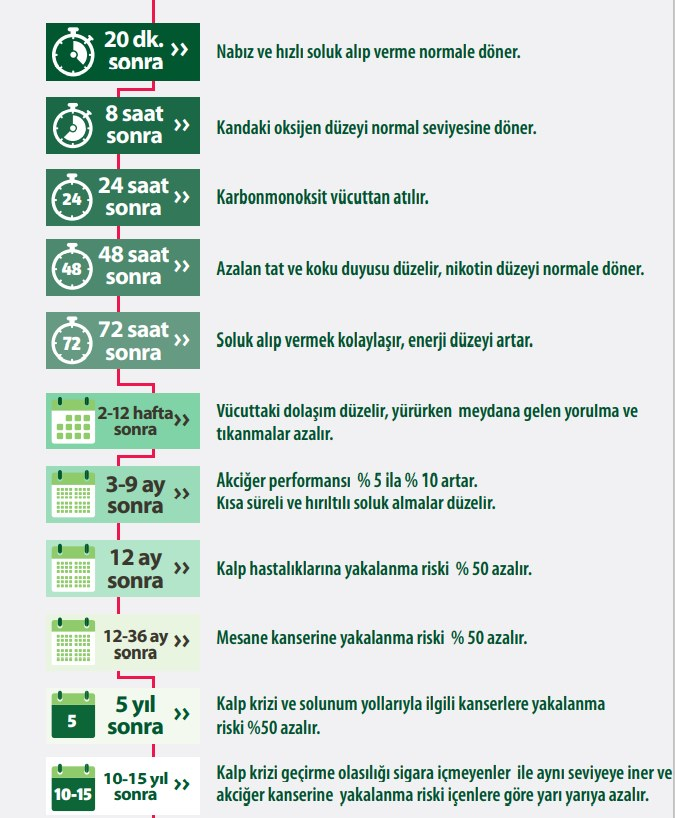

SİGARAYI BIRAK HAYATI BIRAKMA
Sigaraya bağlı her yıl yaklaşık 5 milyon ölüm rapor edilmektedir.
Sigaraya bağlı dünya ekonomisinin 200 milyar dolar zarar verdiği rapor edilmektedir.
Bu kadar zarara karşılık kar eden birileri elbette vardır fakat kar edenler sigara içen veya dumanına maruz kalan insanlar değildir.
9 Şubat Dünya Sigarayı Bırakma Günü vesilesiyle; herkesin sağlığa zararlı olduğu konusunda hemfikir olduğu sigarayı birçok yönden araştırdım ve sizler için bu yazıyı derledim iyi okumalar.

Sigaranın Tarihçesi
Sigaraların, 9. yüzyılda Meksika ve Orta Amerika'da kamış ve tütsüleme tüpleri şeklinde öncülleri olduğu görülüyor. Mayalar ve daha sonra Aztekler, dini ritüellerde tütün ve diğer psikoaktif ilaçları içtiler ve sıklıkla çömlek ve tapınak gravürlerinde rahipleri ve tanrıları sigara içerken tasvir ettiler
p>Avrupalı kâşiflerin Amerika’yı keşfedip yerlilerden barış çubuğu tüttürmesini öğrenmeden önce Batı’da sigara kullanımı pek bilinmiyordu. 1492 yılında Kristof Kolomb Amerika’dan Avrupa’ya dönerken yanında ilk kez tütün tohumları ve yaprakları bulunuyordu. Tütün kullanımı 1556 yılında Fransa’ya girdi ve Jean Nicot tütün içmeyi halk düzeyine indirdi. Bu yüzden bilim adamları Nicot’un adına ithafen sigaradaki en önemli kimyasal maddeye “nikotin” adını verdiler. Kıta Avrupa’sına yayılan tütün alışkanlığı 1565 yılında İngiltere’ye de yayıldı. 1612’de Virginia’da ilk ticari tütün ekimine başlandı.Nikotinin Tarihçesi
Nikotin tarih boyunca böcek ilacı olarak da kullanılmıştır. 2. Dünya Savaşından sonra dünya çapında 2.500 tondan fazla nikotin böcek ilacı (tütün endüstrisinin atıkları) kullanılmış, fakat 1980'lerde nikotin böcek ilacı kullanımı 200 ton altına düşmüştür. Bunun nedeni memelilere daha az zararlı ve daha ucuz olan başka böcek ilaçlarının bulunmasıdır.[1]
Hâlen ABD'de organik tarımda nikotinin tütün tozu şeklinde bile kullanılması yasaktır.[2]
Sigaranın seri üretimine geçilmesi
ABD’de, ilk sigara yapan makinenin patentinin 1881 yılında alınmasının ardından üretim patladı, üretim maliyeti düştü ve kibritin de icat edilmesiyle sigara tüketimi patladı.
Sigaranın Anatomisi

Sigara Katkı Maddeleri
Beş büyük Amerikan sigara şirketi tarafından oluşturulan 599 sigara katkı maddesi listesi, Sağlık ve İnsan Hizmetleri Departmanı tarafından Nisan 1994'te onaylanmıştır. Bu katkı maddelerinin hiçbiri sigara paketinin/paketlerinin üzerinde bir bileşen olarak listelenmemiştir.
Sigaranın Fizyolojik Etkileri
Sigara dumanında kanserojen, irritan özelliklere sahip 4000’den fazla kimyasal madde vardır.
Bu maddelerden bağımlılık yapıcı özelliği olan yegâne madde nikotindir.

İçer İçmez Vücutta Ortaya Çıkan Etkiler
- Kalp atışının hızlanması
- Kan basıncının artması
- Midenin asit üretmesi
- Böbreklerin idrarı gerekenden az üretmesi
- İştahsızlık
- Koku ve tat alma duyularının zayıflaması
- Akciğer büyük ve küçük hava yollarının tahrişi
- El ve ayak parmaklarına kan akışının zayıflaması
- Beyindeki kan akışının yavaşlaması
- Diş çürümeleri
- Baş dönmesi
- Midenin bozulması
Uzun Süre Kullanımda Ortaya Çıkan etkiler
- Sık sık nefessiz kalmak ve öksürmek
- Dişlerde sarı siyah lekelerin oluşması
- Kırışık kuru bir cilt
- Kadınlar ve erkeklerde kısırlık riski
- Kemiklerde kırılma riskinin artması
- Saçlarda dökülme
- Tırnaklarda sararma
- Kanser yapıcı etki
- Akciğerlerde geri dönüşü olmayan etkiler
Sigaradan Dünyada ve Ülkemizde Ölümler
Dünya Sağlık Örgütü (DSÖ) verilerine göre günümüzde sigara kullanımının yılda 5 milyon insanın ölümüne yol açtığı, bu sayının önümüzdeki 20 yıl içerisinde 10 milyona çıkacağı bildirilmektedir. Türkiye’de ise her yıl yaklaşık 100 bin kişi sigara nedeniyle hayatını kaybediyor.
Sigaranın Dünya Ekonomisine ve Ülkemiz Ekonomisine Etkisi
Ayrıca sigaranın dünya ekonomisine yılda 200 milyar dolar zarar verdiği rapor edilmektedir. Ülkemizde ise sigaraya yılda 6.5 milyar dolar harcanıyor.

Sigaranın İnsan Sağlığına Etkisi
- Tütün nedeniyle oluşan hastalıklar
- Koroner kalp hastalığı
- Aterosklerotik periferik damar hastalığı
- Akciğer kanseri
- Ağız kanseri
- Larynx kanseri
- Özofagus kanseri
- KOAH
- Serebrovasküler hastalıklar
- Tütünle ilişkili olası durumlar
- Düşükler
- Artmış infant mortalitesi
- Peptik ülser
- Tütünün katkıda bulunduğu hastalıklar
- Mesane kanseri
- Pankreas kanseri
- Böbrek kanseri
- Servix kanseri
- Tütün ile ilgili fetal etkiler
- İntrauterin büyüme geriliği
- Düşük doğum ağırlığı
- Erişkin ve çocuklar üzerine pasif içiciliğin etkileri
- Artmış akciğer kanseri riski
- Artmış akciğer enfeksiyonu riski
- Maternal Tütün içiminin gebelik ve çocuk üzerine olan etkileri
- Kanıtlanmış Etkileri:
- Çocuğa Olan Etkiler:
- Gebeliğe Etkileri:
- Kanıtlanmış Etkileri:
- Konjenital anomali
- Doğum sonrası hayatta kanser gelişimi
Spontan düşük sıklığını arttırır. Akut ve Kronik fetal distres sıklığını arttırır. İntrauterin gelişme geriliği görülme sıklığını arttırır. Düşük doğum ağırlıklı bebek sıklığını arttırır. Prematür doğum sıklığını arttırır. Doğum sırasında ve sonrasında ölüm ve hastalık riskini arttırır. Doğum sonrası fiziksel ve mental gelişmeyi olumsuz yönde etkiler.
Plasenta Previa sıklığını arttırır. Ablatio Placenta sıklığını arttırır. Erken membran rüptürü sıklığını arttırır. Operatif doğum sıklığını arttırır
Sigara kullanımı ile artmış kanser riski ilişkisi
- Mesane Kanseri riski 2 kat
- Prostat Kanseri riski 2 kat
- Pankreas Kanseri riski 2 kat
- Kalp Hastalığı riski 3 kat
- Kalp Krizi riski 1-4 kat
- Yemek borusu kanseri 8-10 kat
- Bronşit Riski 10 kat
- Kadınlarda kısırlık riski 10 kat
- Erkeklerde iktidarsızlık riski 10 kat
- Ani ölüm riski 10 kat
- Bademcik kanseri riski 7-11 kat
- -Diş eti kanseri riski5-14 kat
- -Gırtlak kanseri riski 16 kat
- -Rahim ağzı kanseri riski 16 kat
- -Akciğer kanseri riski 22 kat
- -Felç olma riski 2-22 kat
- -Ağız kanseri riski 3-30 kat
- -Dil kanseri riski 4-33 kat
Pasif İçicilik
Tütün, yalnızca kullanıcı olanlarda değil, doğrudan kullanıcısı olmayanlarda da sağlık sorunlarıyla birlikte ciddi sonuçlara yol açabilmektedir. Bu nedenle tütün kullanmadığı halde tütüne maruz kalanların durumu da büyük bir önem arz etmektedir. Bu durum pasif içicilik ya da ikinci el tütün dumanına maruz kalma olarak ele alınmaktadır. İkinci el tütün dumanı, sigara ve nargile gibi tütün ürünlerinin kullanıldığı durumlarda kapalı alanları dolduran dumandır. Bu dumanın solunması pasif içicilik olarak adlandırılmaktadır
Dünya Sağlık Örgütü 2020 yılı açıklamasına göre; ikinci el tütün dumanına maruz kalma, özellikle erken yaşta çok daha kritik sonuçlara sebep olmaktadır. Dünya genelindeki çocuk nüfusunun yaklaşık yarısı tütün dumanının kirlettiği havayı solumakta ve bu durum ciddi sonuçlara neden olabilmektedir
Pasif İçicilik ile ilgili önemli hususlar;
Yanan bir sigaranın üçte ikisi havaya gitmektedir
- Bir sigara yaklaşık 12 dakika yanar; ancak sigara içen bir kişinin yalnızca 30 saniye sigarayı içine çektiğini söyleyebiliriz. Geri kalan dumanı çevredekiler içine çekmektedir.
- Çevreye yayılan sigara dumanı normal olarak içilen sigaradan 3 kat daha fazla nikotin, yüzde 70 oranında daha fazla katran ve 2,5 kat fazla karbonmonoksit içermektedir.

Elektronik Sigara
Son yıllarda giderek yaygınlaşan e-sigara, görünüşü, hareketi ve dumanı ile sigarayı taklit etmek üzere tasarlanmış bir ürün. Genellikle nikotin, aroma maddeleri ve diğer kimyasalların aerosolünü çekmesini sağlarken, solunabilir nikotin buharı salıyor. Dumanın kokusu ile yoğunluğu isteğe bağlı olarak ayarlanabiliyor. E-sigara solüsyonlarında üretici firmaya ya da isteğe göre ayarlı miktarlarda nikotin, aroma, tütün ürünü (sigara, nargile, puro) ve kanserojen madde bulunabiliyor.
Daha fazla nikotin alımı
E-sigara ile her nefeste 0-36 mg/mL arasında nikotin alınıyor. Böylece 30 puf çekildiğinde bir sigaradan alınan miktar kadar nikotin alınıyor. Bu nedenle e-sigara, sigaraya göre daha fazla nikotin alınmasına neden oluyor. E-sigaranın kartuşunun içindeki sıvıda ayrıca propilen glikol, etanol, nitrozamin, tütün çiçeği, nane, kahve, çikolata, meyve aromaları gibi tat ve koku içeren farklı kimyasallar bulunabiliyor.
Sağlık Zararı
E-sigara likitleri günümüzde 7000 aroma seçeneği ile müşterileri cezbetmek için büyük pazarlama stratejisi uyguluyor. Günümüzde e-sigaralarda saptanan kimyasal maddelerin çoğu sigara içinde bulunan ve kansere neden olduğu saptananlarla aynı.
E-sigara, Dünya Sağlık Örgütü ve Sağlık Bakanlığı'nca önerilmeyen, zararlı olarak bildirilen bir ürün. ‘Nikotine and Tobacco Research' dergisinde yayınlanan bir araştırmaya göre; Amerika'da hiç sigara içmemiş çocukların e-sigara kullanımı 2011'de 79 bin iken 2013'te 263 bine ulaşarak iki yıl içinde üç kat artmış.
Tütün Bağımlılığı Tanısı
Dünya Sağlık Örgütüne göre nikotin kullanım bozukluğu olarak da isimlendirilen tütün bağımlılığının temel belirtileri şunlardır:
- Kullanımı kontrol etme kabiliyetinin bozulması,
- Tütün kullanımına diğer etkinliklere göre daha fazla öncelik verilmesi,
- Zararlarla veya olumsuz sonuçlarla karşılaşılmasına rağmen kullanıma devam edilmesi ile kendini gösteren güçlü bir nikotin kullanma isteği,
- Nikotinin gitgide eski etkisini kaybetmesi (tolerans geliştirilmesi),
- Nikotin kullanımının kesilmesi veya azaltılması sonrasında yoksunluk belirtilerinin görülmesi,
- Tütünün etkilerinin neden olduğu, alevlendirdiği, yineleyici toplumsal ya da kişiler arası sorunlar olmasına karşın tütün kullanımını sürdürme (Örneğin; tütün kullanımıyla ilgili olarak başkalarıyla tartışmalara girme),
- Yineleyici bir biçimde tehlikeli olabilecek durumlarda tütün kullanma (Örneğin; yatakta sigara içme),
- İşteki, okuldaki ya da evdeki konumunun gereği olan başlıca yükümlülüklerini yerine getirememe ile sonuçlanan, yineleyici tütün kullanımı
Nikotin bağımlılığınızı görmek istiyorsanız örnek bir test; www.bırakabilirsin.org
Sigara Başlama Yaşı
Türkiye’de sigara içenlerin yaş ortalamasının giderek düştüğünü göstermektedir. İlköğretim ve lise yıllarında halen sigara kullanımı %9, lise yıllarında %29-50 arasında ve üniversite öğrencileri arasında sigara içme sıklığı %21-48 arasında olduğuna ilişkin araştırma sonuçları bulunmaktadır. Çalışan gençlerde ise halen sigara kullanımı %58’dir.
Ailenin Sosyoekonomik, Kültürel ve Davranışsal Etkisi
- Ailelerin sosyoekonomik ve eğitim düzeyleri düştükçe gençler arasında sigara kullanımı yükselmektedir.
- Ailenin sosyal norm ve değerlerine uymak için gençler sigaraya başlamaktadırlar.
- Ailede sigara kullanan bir birey olması gencin sigara ile tanışmasına neden olmaktadır. Ebeveynin sigara kullanması gencin sigara kullanma riskini iki kat artırmaktadır.
- Aile desteğinin yetersizliği, aile ile yetersiz ilişki sigara kullanmayı artırmaktadır.
Arkadaş Etkisi
En yakın arkadaşın sigara kullanması ya da arkadaş grubunda sigara kullanılması gencin sigara ile tanışmasına neden olmaktadır.
Gencin Sosyodemografik ve Psikososyal Yapısı
Adölesanlar kendilerine olan güvenlerini artırmak için sigaraya başlayabilmektedir
Gençler popülaritelerinin artması için sigara kullanmaktadırlar. Son yıllarda gençler arasında nargile kullanımının da popüler bir davranış olarak kabul edilmeye başlamıştır.
Nikotin Bağımlılığı Testi
Sigarayı Bırakmak İçin Çözüm Yolları
Tütün arındırma (detoks) ve intoksikasyon tedavisi yoktur. Çok kişinin tütünü profesyonel bir
yardım olmaksızın veya organize bir program kullanmadan bırakmayı başarmasına karşın, pek
çok içici de bunu kendi kendilerine başaramaz ve yardım ararlar.
Genel olarak tedavi yöntemlerini 8 grupta toplayabiliriz:
- Kendi kendine bırakma
- Klinikler ve gruplar
- Medikal tedavi
- Davranışçı yöntemler
- Doktor öneri ve telkinleri
- Hipnoz
- Akupunktur
- Kitle iletişimi ve toplu programlar.
Yeşilay, Birinci Dünya Savaşı sırası ve sonrasında işgal güçlerinin toplumumuzda alkol ve uyuşturucu maddeleri yaygınlaştırmasını ve işgale karşı mücadele ruhunun yıkılmasını önlemek amacıyla dönemin Şeyhülislam'ı İbrahim Haydarizade'nin himayesinde, Dr. Mazhar Osman Uzman ve arkadaşları tarafından Sultan Vahdeddin'in izniyle 5 Mart 1920'de İstanbul'da "Hilal-i Ahdar" adıyla kurulmuştur.
Çalışma Alanları;
- Alkol bağımlılığı
- Tütün(sigara) bağımlılığı
- Madde bağımlılığı
- Kumar bağımlılığı
- Teknoloji bağımlılığı
www.bırakabilirsin.org ,Yeşilayın tütün bağımlılığıyla ilgili hazırlamış olduğu kapsamlı bir sitedir.
YEDAM;Yeşilay Danışmanlık merkezi(yedam.org.tr)
YEDAM 115 numaralı hat üzerinden bağımlılara, bağımlı yakınlarına veya bağımlılıkla ilgili bilgi almak isteyenlere danışmanlık hizmeti sunmaktadır. Telefonun ucunda bağımlılık alanında özel eğitim almış psikolog kadronun görev yaptığı YEDAM Danışma Hattı, ülkemizin tüm illerinde alkol, tütün, madde, kumar ve internet bağımlılıkları konusunda hizmet vermektedir.
Sigarayı Bıraktıktan Sonra Vücudumuzda Meydana Gelenler;

Son Söz
Sigarayı bırakmak isteyenler çoğunlukla profesyonel bir yardım almadan iradeleriyle bırakmaya çalışıyorlar. Sigarayı bırakamadıklarında da denedim olmadı, iradem zayıf lafının arkasına saklanıp içmeye devam ediyorlar.
Sigara bırakmada başarısızlık varsa zayıf olan iradeniz değil bırakma yönteminizdir.
İradeniz zayıf değil, nikotinin bağımlılık etkisi yüksek: destek al denemekten vazgeçme.
Her gün bağımlı olduğun maddeyi almak için aylık ödediğin ücretin farkında ol.
-SİGARAYI BIRAK HAYATI BIRAKMA
Kaynakça
bırakabilirsin.org
sağlık bakanlığı/sağlık hizmetleri genel müdürlüğü
https://en.wikipedia.org/wiki/Cigarette
Hacettepe Üniversitesi Tıp Fakültesi Halk Sağlığı Anabilim Dalı